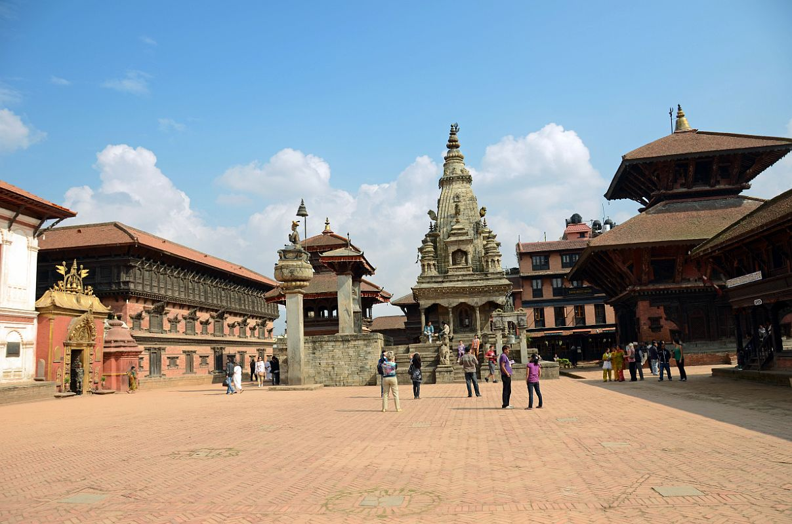
Major Festivals of Nepal
Nepal is enormously called the world of colorful vibrant festivals. Most of the festivals celebrated in Nepal have the religious connotation and some are primarily based on vital occasions from historic mythology and epic literature. The shiny cultural diversity of Nepal may be found within the difference of different competition celebrations.Here are the three most famous festivals of nepal celeberated in autumn season.
Dashain:

This is the longest Hindu festival in Nepal, traditionally celebrated for two weeks with prayers and offerings to Durga, the Universal Mother Goddess. The great harvest festival of Nepal, Dashain is a time for family reunions, exchange of gifts and blessings, and elaborate pujas. Dashain honors the Goddess Durga, who was created out of the shakti or energy of all the gods, armed with weapons from each of them.
Goddess Durga, symbolizing valor and prowess, is worshipped and offered sacrifices to ensure the devotees' progress and prosperity. During the first ten days, pilgrims flock to various river confluences early in the morning and sacred shrines in the evening. Ghatasthapana, Phool Pati, Mahaastami, Nawami and Vijaya Dashami are the series of the events under Dashain each marked with a different set of rituals.
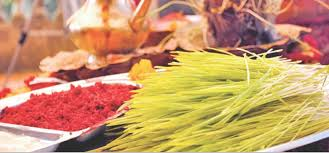
During Dashain, men and women in their fineries visit their elders to seek tika (a dab of red vermilion mixed with yogurt and rice) accompanied by blessings. Sword precessions (Paayaa) are also held in various part of the Kathmandu Valley. A large number of animals are officially sacrificed at Hanuman Dhoka during Nawami which is attended by officials, invitees and visitors.
During the ninth day, the Taleju Temple which is normally out of bounds is also open to the public. The last day, known as Kojagrat Purnima, is the full moon. New clothes, home visits, grand feasts, kite flying and village swings are the highlights of Dashain. Around this time the population of Kathmandu is greatly reduced as many head home to various parts of the country.
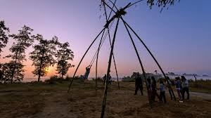
On the tenth day known as Tika, people are seen moving around with their foreheads covered with rice tika, wearing new clothes. There is much feasting as people visit relatives’ homes to receive tika and blessings.
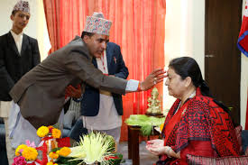
Tihar:
The five-day festival of lights, known as Tihar honors Yama, the God of Death, meanwhile the worship of Laxmi, the Goddess of Wealth dominates the festivities.
On the first day Kaag Tihar, is the day of the crow, the informant of Yama is worshipped. The second day Kukur Tihar is for worshipping the dogs as the agents of Yama. On the third day is Gai Tihar and Laxmi Puja. On this day cow is offered prayers and food in the morning, and Goddess Laxmi is offered elaborate prayers and puja in the evening.
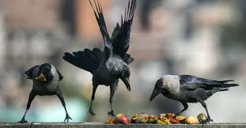
The fourth day is for the draught animal, oxen when the Newari community also performs Mha Puja dedicated to oneself. The fifth day is Brothers’ Day when sisters put tika on their brothers’ foreheads and give blessings. This festival is noted for lighting up of homes with candles, oil-wick lamps and electric lights.
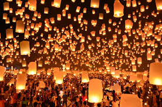
Houses all over the country are lit up with extra lights and decorated with garlands. A great view can be had of the brightly lit-up Kathmandu city from the Swoyambhunath Stupa. The celebrations begin with the adoration of crows and dogs. Leaf dishes of rice, incense and light are set out for the dark messenger, while dogs are worshipped and offered goodies.
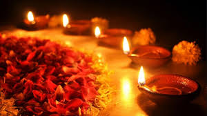
During the day known as Laxmi Puja, the Goddess of Wealth, is welcomed to people’s homes by making a path of footprints leading into the house. All lights are kept on and the doors and windows kept open to let in the goddess. Rows of lamps are placed along windows and doors, with the strong hope that Laxmi, the Goddess of Wealth notices and enters. The day also belongs to the cow that represents Laxmi.
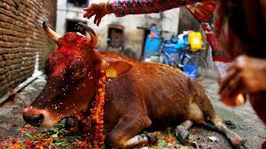
Bhai Tika is the day people look forward to. In some communities, sisters and brothers accept tika from each other. Bhai means brother in Nepali. Brothers and sisters honor each other and the sisters pray to Yama, the God of Death, for their brothers' progress, prosperity and longevity.
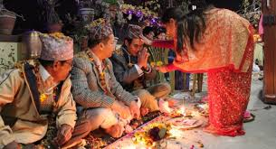
The brothers bring gifts to their sisters and the festival ends with feasting. It is also traditional to go from house to house singing Tihar songs and bestowing blessings, whereupon the residents of the house give money in return. Fireworks also fill the skies despite a government ban on fire-crackers.
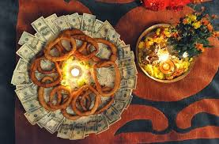
Chhath:
Chhath Parva, attracts thousands of pilgrims to the holy town of Janakpur in south-eastern Nepal. But it is celebrated all over Nepal including Kathmandu where people from the Terai gather along the banks of rivers especially Bagmati to worship. The goal they say is to achieve purity both physical and spiritual.

Devotees from Nepal and India throng the ancient city of Janakpur to worship at the famous Janaki Temple and take ritual baths in the rivers and ponds. It is a three-day festival with the first day spent in cleaning the kitchen and preparing for the fast.
On the second day, devotees fast from the morning and spend the day preparing their offerings of fruits, sweets and nuts etc. In the evening they gather at the banks of rivers and ponds to wait for the sun to set. They light lamps, sing songs and wade into the water to pray and make offerings to the fading sun. Lighted oil-wick lamps are set afloat on the river and it is a beautiful sight to behold.
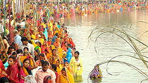
After the sun goes down the devotees return home. The worshippers are almost exclusively women with most men just watching. The ritual is repeated the next morning at dawn when they wait for the sun to rise. As the sun comes up over the horizon there is euphoria and devotees scramble to offer prayers, holy water, fruits, coconuts and sacred threads.
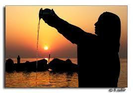
The ritual is also to ask the sun for protection from skin diseases. When it is over the offerings are distributed and the women break their fast.